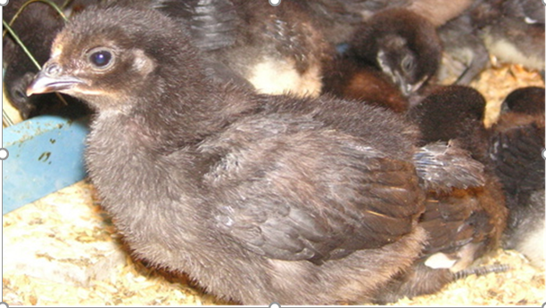

我是
大帥哥
我家住在
新北市汐止區
看起來就像一隻頭朝左的小雞

我家附近有一個公園 名叫
北峰公園
小時候沒甚麼遊樂設備 歷經多次整修 設備更加完善了
購物部分 走路有全聯 美廉社 騎車也有好事多 頂好 家樂福
想要看景 能遊金龍湖 五月翠湖賞桐 更是能由翠湖爬山到東湖(台北市內湖區)
住在汐止區----兩北市的交界處 是一個很不錯的地方
圖片出處:https://readtiger.com/img/wkp/zh/Xizhi_District.PNG